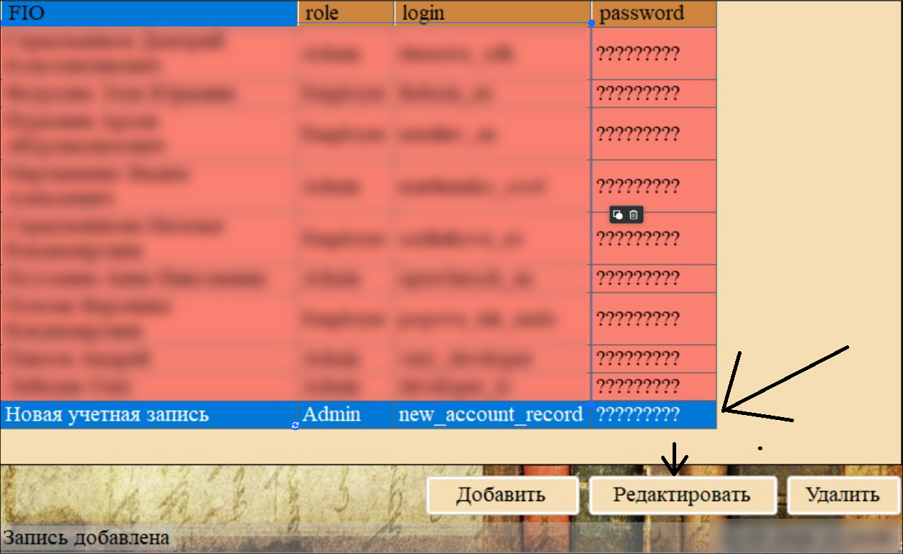
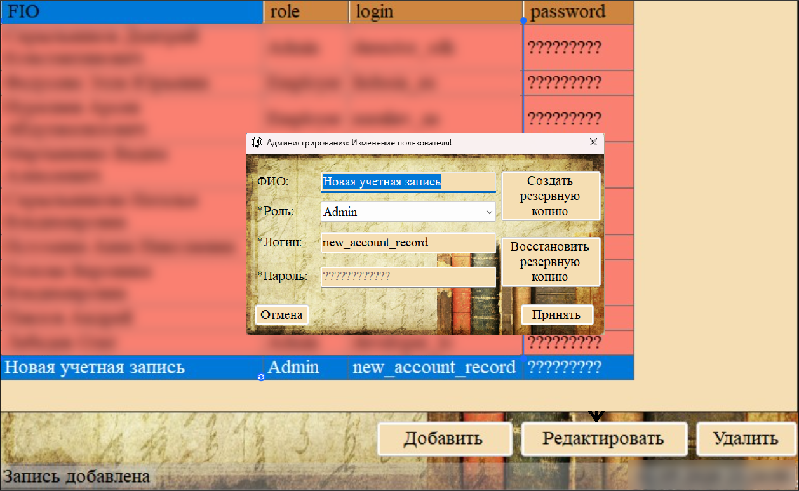
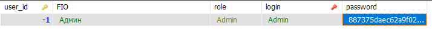
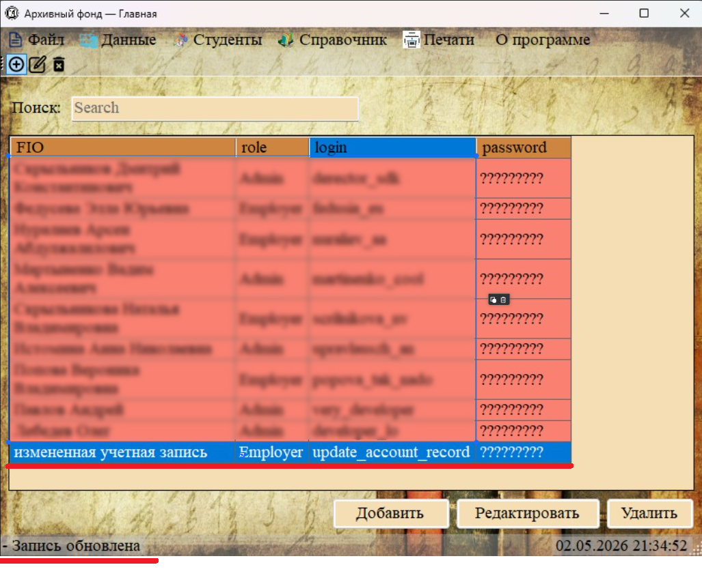

Функция «Редактирование пользователя» позволяет изменить данные существующей учётной записи, включая смену пароля. Доступна только администратору.

Рис. 1. Выделите нужного пользователя в таблице
Порядок действий
1. Перейдите в раздел «Данные → Пользователи».
2. Выделите строку с нужным пользователем.
3. Нажмите кнопку «Редактировать».

Рис. 2. Форма редактирования пользователя (заголовок «Изменение пользователя»)
Поля формы редактирования
| Поле | Особенности редактирования |
|---|---|
| ФИО | Можно изменить в любое время |
| Роль | Можно изменить (например, повысить сотрудника до администратора) |
| Логин | Можно изменить; новый логин должен быть уникальным |
| Пароль | Поле необязательное при редактировании — если оставить пустым, пароль не изменится |
Смена пароля

Рис. 3. Для смены пароля просто введите новый в соответствующее поле
Чтобы сменить пароль пользователя:
1. Откройте форму редактирования пользователя.
2. Введите новый пароль в поле «Пароль» (вместо старых символов).
3. Нажмите «Принять».
Важные особенности смены пароля:
— Если поле пароля оставить пустым, пароль не изменится (останется прежний).
— Если ввести новое значение, оно будет захэшировано и сохранено вместо старого пароля.
— Сам пользователь не может сменить свой пароль — это делает администратор (или сам администратор может изменить свой пароль через эту же форму).
Защита системного администратора

Запись системного администратора с логином «Admin» и user_id = -1 защищена:
— При попытке редактирования этой записи её можно изменить (например, сменить пароль).
— Но удалить эту запись через интерфейс невозможно — код программы явно проверяет user_id и предотвращает удаление.
Результат редактирования

Рис. 5. Сообщение в статусной строке об успешном обновлении
После успешного редактирования:
— Данные в таблице обновляются.
— В статусной строке появляется сообщение «Запись обновлена».
— Если был изменён пароль, пользователь должен использовать новый пароль при следующем входе.